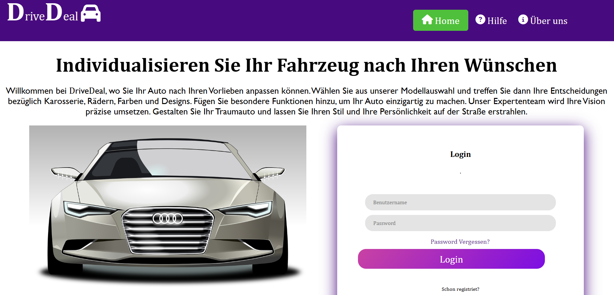

IOT (Sudokuspiel)

Entwicklung eines interaktiven Sudoku-Spiels mit Python und MQTT Erstellung eines Multiplayer-Sudoku-Spiels mit Python, das die MQTT-Protokollarchitektur für die Echtzeitkommunikation zwischen Spielern verwendet. Implementierung eines MQTT-Dienstes zur Verwaltung mehrerer Topics, um Spielinformationen wie Spieleraktionen, Zeitlimits und Punktestände zu synchronisieren. Gestaltung und Programmierung der Benutzeroberfläche mit Tkinter zur Darstellung des Sudoku-Gitters und dynamischen Interaktionen. Entwicklung eines Services zur Übertragung von Spielständen zwischen den Teilnehmern und zur Synchronisierung des Fortschritts in Echtzeit. Verwendung von Python-Threads zur Steuerung des Spielablaufs, einschließlich Timer, Score-Tracking und Interaktionen zwischen den Spielern.
Verwendete Technologien und Fähigkeiten
- MQTT
- TKINTER
- Raspberry
- DOCKER
- Gitlab
Das Projekt auf GitHub ansehen
Meine Arbeit an diesem Projekt
Im Rahmen dieses Projekts zur Entwicklung eines interaktiven Sudoku-Spiels war ich maßgeblich an der Erstellung der Spiel-Logik, der Benutzeroberfläche (UI) und der Integration des Echtzeit-Kommunikationssystems über das MQTT-Protokoll beteiligt. Hier ist eine detaillierte Übersicht über meine wichtigsten Beiträge:
1. Entwicklung der Sudoku-Spiel-Logik
Das Herzstück des Projekts bildet die Spiel-Logik von Sudoku, und ich war für die Konzeption und Implementierung dieser wesentlichen Funktion verantwortlich. Dazu gehören:
- Validierung der Eingaben der Spieler : Ich entwickelte einen Algorithmus, um sicherzustellen, dass die Zahlen, die von den Spielern eingegeben werden, die Sudoku-Regeln einhalten (keine Duplikate in den Zeilen, Spalten und Unterfeldern).
- Verwaltung des Rasters : Ich programmierte die dynamische Erstellung eines Sudoku-Rasters und implementierte Mechanismen, um die Felder basierend auf den Aktionen der Spieler zu füllen und zu aktualisieren.
- Synchronisation des Spiels : Durch die Verwendung von MQTT stellte ich die Echtzeit-Synchronisation des Spielzustands zwischen den Spielern sicher, um ein flüssiges und verzögerungsfreies Spielerlebnis zu gewährleisten.
2. Gestaltung der Benutzeroberfläche mit Tkinter
Die grafische Benutzeroberfläche wurde mit der Bibliothek Tkinter erstellt, und ich war für die gesamte Programmierung der Benutzeroberfläche verantwortlich. Die wichtigsten Funktionen der Benutzeroberfläche sind:
- Dynamische Anzeige des Rasters : Ich gestaltete eine interaktive Anzeige des Sudoku-Rasters, die es den Spielern ermöglicht, Zahlen einzugeben und die Updates in Echtzeit zu sehen.
- Verwaltung der Interaktionen : Ich implementierte Benutzerereignisse wie Klicks auf die Felder und die Logik, die den Spielzustand basierend auf den Aktionen der Spieler aktualisiert.
- Anzeigen der Ergebnisse : Sobald das Spiel beendet war, programmierte ich eine Funktion, die die Ergebnisse anzeigt, einschließlich der Punktzahlen und des Gewinners, in einem Popup-Fenster.
3. Integration der Echtzeit-Kommunikation über MQTT
Ein entscheidender Teil des Projekts war die Ermöglichung der Echtzeit-Kommunikation zwischen den Spielern. Ich richtete ein MQTT-System ein, das die Synchronisation von Spieleraktionen, Punktständen und Zeitlimits ermöglichte. Hier sind die Elemente, die ich verwaltet habe:
- Konfiguration des MQTT-Servers : Ich installierte und konfigurierte einen Dockerisierten MQTT-Server, der eine stabile Kommunikation zwischen den Spielern ermöglichte und gleichzeitig die Server-Ressourcen optimierte.
- Verwaltung der MQTT-Topics : Ich erstellte mehrere MQTT-Topics, um verschiedene Informationen zu verwalten, wie z. B. Spieleraktionen, Punktaktualisierungen und Zeitänderungen. Dadurch wurde die Synchronisation der Spiele zwischen den Teilnehmern sichergestellt.
- Verwaltung der Nachrichten und Abonnements : Ich entwickelte die Logik zum Veröffentlichen und Abonnieren von MQTT-Nachrichten, um den Spielstatus zu verwalten. Die Aktionen der Spieler (wie das Ausfüllen eines Feldes) wurden auf das entsprechende Topic veröffentlicht und in Echtzeit von allen Spielern empfangen.
4. Synchronisation des Spiels mit den LEDs
Obwohl die Verwaltung der LEDs von einem anderen Teammitglied durchgeführt wurde, arbeitete ich in Zusammenarbeit mit ihm daran, die Steuerung der LEDs in den Spielablauf zu integrieren. Dies beinhaltete:
- Verwendung von MQTT-Nachrichten, um die LEDs basierend auf dem Spielstatus ein- und auszuschalten (z. B. wenn das Spiel beendet ist oder ein Spieler eine Aktion ausführt).
- Koordination mit der Benutzeroberfläche, um visuelle Änderungen in Echtzeit anzuzeigen, wenn Ereignisse im Spiel auftreten.
5. Verwendung von Threads zur Verwaltung von Zeit und Punktständen
Um das Spiel interaktiver und dynamischer zu gestalten, verwendete ich Python-Threads zur Verwaltung der folgenden Aspekte:
- Der Spiel-Timer : Ein Timer läuft parallel, um die Zeit für jede Runde zu begrenzen, und ich verwendete Threads, um die gleichzeitige Ausführung des Timers zu steuern, ohne die Benutzeroberfläche zu blockieren.
- Verwaltung der Punktstände in Echtzeit : Ich richtete eine parallele Verwaltung der Punktstände ein, die sich in Echtzeit basierend auf den Aktionen der Spieler aktualisiert, während gleichzeitig die Benutzeroberfläche flüssig bleibt.
6. Verwaltung der Installation auf dem Dockerisierten MQTT-Server
Ich war für die Installation und Konfiguration der MQTT-Serverumgebung mit Docker verantwortlich. Dieser Schritt ermöglichte eine einfache und schnelle Einrichtung des Servers und stellte sicher, dass eine skalierbare und leistungsstarke Lösung für die Echtzeitkommunikation zwischen den Spielern zur Verfügung stand.
Fazit
Durch dieses Projekt konnte ich meine Fähigkeiten in mehreren Schlüsselbereichen unter Beweis stellen, darunter:
- Python-Programmierung, mit einem tiefen Verständnis für Bibliotheken wie Tkinter und MQTT.
- Verwaltung eines Dockerisierten Servers, um eine effiziente Kommunikation in Echtzeit zu optimieren.
- Entwicklung eines interaktiven Spiels, das eine komplexe Spiel-Logik und Echtzeit-Zustandsverwaltung umfasst.
Durch die Integration von Multiplayer-Funktionen mit MQTT konnte ich ein flüssiges und immersives Spielerlebnis bieten und gleichzeitig eine perfekte Synchronisation der Aktionen der Spieler sicherstellen. Dieses Projekt ist eine ausgezeichnete Gelegenheit, meine Fähigkeiten in der Softwareentwicklung und im Projektmanagement zu demonstrieren.
Projektmedien
.jpeg)


Webentwicklung (DriveDeal)

Deal Drive ist eine interaktive Webseite, die mit HTML, CSS und JavaScript entwickelt wurde. Sie ermöglicht es den Nutzern, ein individuelles Fahrzeug zu konfigurieren, indem sie verschiedene Teile wie Räder, Karosserie und Türen auswählen. Jede Auswahl beeinflusst sowohl das Erscheinungsbild des Fahrzeugs als auch den Preis, wodurch eine dynamische und ansprechende Nutzererfahrung entsteht. Das Projekt basiert auf dem „Pick and Build“-Konzept , bei dem der Nutzer sein eigenes Modell nach seinen Vorlieben zusammenstellen kann. Ziel war es, eine intuitive Benutzeroberfläche bereitzustellen, die Änderungen in Echtzeit visuell darstellt. Durch dieses Projekt konnten wir die dynamische Verwaltung von UI-Elementen , die Interaktivität mit JavaScript sowie die Echtzeit-Aktualisierung von Konfigurationen und Preisen erproben.
Verwendete Technologien und Fähigkeiten
- HTML
- CSS
- JAVASCRIPT
- GitHub
Das Projekt auf GitHub ansehen
Meine Arbeit an diesem Projekt
Meine Rolle – Bezahlen-Seite (Warenkorb) – Projekt Deal Drive
Im Rahmen des Deal Drive-Projekts war ich für die Entwicklung der Bezahlen-Seite (Warenkorb) verantwortlich, die den Kaufprozess abschließt. Nachdem der Benutzer sein Fahrzeug nach seinen Wünschen konfiguriert hatte, wurde er auf diese Seite weitergeleitet, um eine Zahlungsmethode auszuwählen und die Bestellung abzuschließen.
Hauptfunktionen, die ich implementiert habe:
1. Weiterleitung nach der Konfiguration:
Nachdem der Benutzer sein Fahrzeug personalisiert hatte, wurde er automatisch zur Bezahlen-Seite weitergeleitet, um den Kauf abzuschließen.
2. Auswahl der Zahlungsmethode:
PayPal-Option:
Der Benutzer gibt seine E-Mail-Adresse ein. Eine simulierte Zahlungsbestätigung wird angezeigt (keine echte Integration der PayPal-API).
Kreditkarten-Option:
Der Benutzer gibt seine Kreditkartennummer ein. Durch eine Validierung mit regulären Ausdrücken (Regex) erkennt das System automatisch, ob es sich um eine Visa oder Maestro-Karte handelt und überprüft die Gültigkeit der Nummer. Falls die Karte ungültig ist oder eine falsche Nummer eingegeben wird, erhält der Benutzer eine Fehlermeldung. Anschließend muss der Benutzer weitere Informationen wie Ablaufdatum und CVC-Code eingeben, um die Zahlung abzuschließen.
Dieses Modul ermöglichte es mir, Echtzeit-Datenvalidierung und eine dynamische Bedingungslogik zu implementieren, um eine intuitive und sichere Benutzererfahrung zu gewährleisten.
Projektmedien
TOP – TeamOrientesProjekt – Workshop-Management

Entwicklung einer Full-Stack-Webanwendung zur vollständigen Verwaltung des Workshop-Prozesses im Rahmen des Projekts TOP. Das System deckt den gesamten Ablauf ab – von der anfänglichen Anfrage der Schulen über die Genehmigung bis zur Veröffentlichung – und ermöglicht den Mitgliedern eine interaktive Bewerbung.
Verwendete Technologien und Fähigkeiten
- Node.js
- Express
- PostgreSQL
- Sequelize
- AWS EC2
- CI/CD
Das Projekt auf Linkeldin ansehen
Meine Arbeit an diesem Projekt
Mein persönlicher Beitrag:
1. Backend und Datenbank:
Administration und Einrichtung der PostgreSQL-Datenbank in einem Backend-Container (Erstellung der Tabellen und Befüllung mit Testdaten).
Entwicklung von REST-Endpunkten mit Node.js, Express und dem ORM Sequelize.
2. Frontend und Integration:
Konzeption und Implementierung von Frontend-Services zur Anzeige von Profilen sowie zur Realisierung der Dokumenten-Upload-Funktionalität über dedizierte Komponenten.
3. Cloud-Deployment:
Einrichtung einer CI/CD-Pipeline und Deployment der Anwendung auf einer AWS EC2-Instanz.